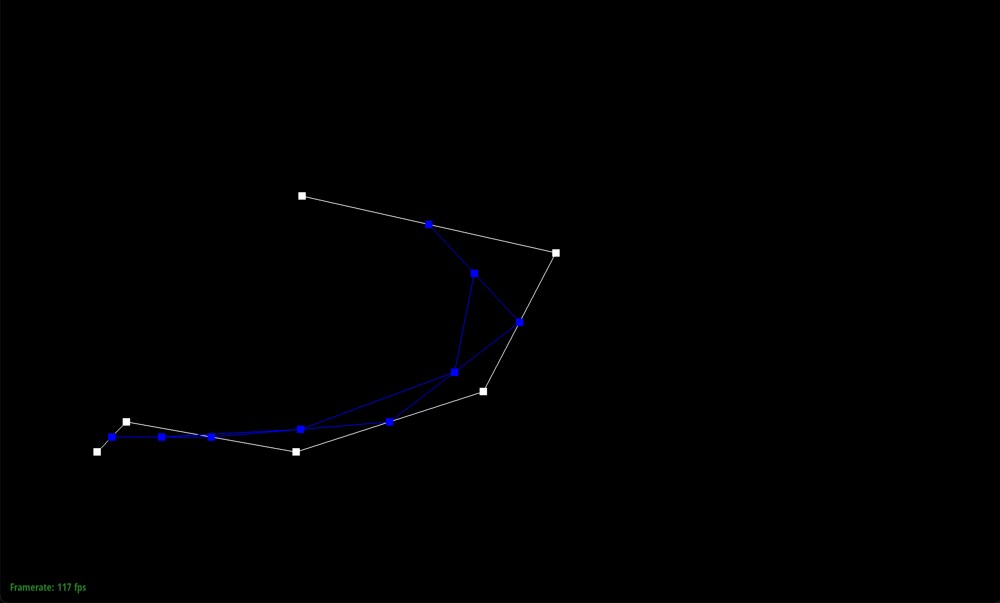

CS184/284A Spring 2025 Homework 2 Write-Up
Link to webpage: (TODO) cs184.eecs.berkeley.edu/sp25
Link to GitHub repository: https://github.com/cal-cs184-student/sp25-hw2-up-dog

Overview
In this assignment, we implemented various fundamental mesh editing operations, including Bezier curves, surfaces, Phong shading, edge flipping, edge splitting, and loop subdivision using the half-edge data structure. Through these tasks, we gained a deeper understanding of geometric processing and the importance of structured debugging. One key takeaway was the significance of visualization—drawing diagrams greatly improved our ability to track half-edge relationships and troubleshoot errors. Overall, this assignment reinforced our grasp of mesh representations and manipulation techniques, providing valuable insights into computational geometry and computer graphics.Section I: Bezier Curves and Surfaces
Part 1: Bezier curves with 1D de Casteljau subdivision
We know that a Bezier curve is defined by a set of control points and changing the positions of these control points reshapes the curve. And we use the recursive De Casteljau’s algorithm to construct points on the Bezier curve as it linearly interpolates b/w control points at each level till it arrives at a single point on the curve for a chosen parameter t ∈ [0,1].
We want to perform one level of interpolation on a set of 2D control points, so for each adjacent pair of points, we compute a new point that lies b/w them, according to the parameter t, i.e., through the mathematical formula \(P_i^{(1)} = (1-t)P_i^{(0)} + tP_{i+1}^{(1)}\), then we take the input vector of points and for each pair of points compute the weighted midpoint and store the new midpoints in a new vector and return.
In my own Bezier curve with 6 control points chosen: 0.161 0.250 0.209 0.300 0.490 0.250 0.800 0.350 0.920 0.580 0.500 0.674
We get the image (1.1.my_curve.bzc) below:
Below are the screenshots of each step / level of the evaluation from the original control points down to the final evaluated point (1.1~1.6.my_curve.bzc).
|  | ||
Below is the completed Bezier curve (1.7.my_curve.bzc) as well.
Below are the curves after points toggled to other positions, and parameter t modified with mouse scrolling over 3 different t values.
Part 2: Bezier surfaces with separable 1D de Casteljau
A Bezier curve can be evaluated by applying the 1D De Casteljau algorithm twice across 2 directions, including across each row by treating each of the rows’ control points as a 1D Bezier curve parameterized by u and for each row recursively interpolate through its control points until a collapsed point per row is reached, and across each column similarly.
We implemented the Bezier surface using the 3 provided functions in the code. In BezierPatch::evaluateStep we perform similarly as Part 1’s 2D version but now our datapoints are 3D instead of 2D and for each pair of adjacent points, we compute using the same formula \(P_i^{(1)} = (1-t)P_i^{(0)} + tP_{i+1}^{(1)}\).
In BezierPatch::evaluate1D we recursively apply evaluateStep till only one point remains in the array and teh final point is the evaluated point on a 1D Bezier curve at parameter t.
In BezierPatch::evaluate, we call evaluate1D for each row \(i\) in the controlPoints with size \(n\) to get a single point per row and collect these results into the new array and call evaluate1D again on that array with teh input argument \(v\) to get the resulting point as the final point on the Bezier curve.
Below is a screenshot of the bez/teapot.bez:
Section II: Triangle Meshes and Half-Edge Data Structure
Part 3: Area-weighted vertex normals
We can use vertex normals to implement Phong shading. Using the half-edge data structure provided to us, we can compute the area-weighted normal at a vertex by (1) calculating the area of a triangle given a half-edge by traversing the vertices and calculating the cross product, (2) finding the area-weighted average, and (3) normalizing it.
|
|
|
Part 4: Edge flip
First, we drew out the diagram of the before and after with the old and new labeled half-edges and pointers. Next, we kept track of all the elements such as the half-edges, faces, and vertices which we then updated according to the new diagram we drew; to update the half-edge pointers, we used the setNeighbors() function. In the code implementation, we also check whether an edge is a boundary edge (via the isBoundary() function) at the start and if it is, we don’t flip it.
Implementing this was not particularly difficult but debugging was a pain. Initially, I did not draw the diagrams (as recommended in the specs) and tried to do it all in my head, but during the debugging process, I realized that it would be easier to have both the old and new labeled diagrams to visualize, especially during the assignment process. After that, it was a lot easier to see whether the new pointers were assigned to the right variables.
|
|
|

|
|
|
|
|
Part 5: Edge split
The implementation for this part was very similar to part 4, but now, we have to create new vertices, edges, etc. To do this, we calculated the midpoint of edges [(v0->position + v1->position) * 0.5] to assign the new triangle meshes to their respective pointers. Then, we assigned the half-edge pointers using the setNeighbors() function, updated twin relationships, vertex, and edges. We ignore requests to split boundary edges.
|
|
|
|
|
|
|
|
|
|
Part 6: Loop subdivision for mesh upsampling
Implementation
Loop Subdivision is used to upsample a triangular mesh by splitting each triangle into 4 smaller ones then adjust the vertices’s positions to make a smoother overall surface of the rendered grid. And the process steps include first splitting every triangle into 4 smaller triangles, then updating the newly created vertices (edge midpoints) and old vertices positions. Repeat these 2 steps iteratively until an overall original mesh becomes smoother.
We follow the provided template in implementing the upsample process.
- Compute new positions for old vertices. For each vertex \(v\) in original mesh marked as original by assigning
isNewto false and assigned a new temporary position. Then, we follow the weighting rule \((1 - n * u) * \text{original_position} + u *\text{original_neighbor_position_sum}\) where \(n\) is the count and \(u = \frac{3}{16}\) if \(n = 3\), otherwise \(u = \frac{3}{8n}\). - For each edge in the original mesh, store the position where the new vertex should be placed with a temporary position, and follow this formula for the new updated position: \(\frac{3}{8} * (A + B) + \frac{1}{8} * (C + D)\).
- Split each edge from the original mesh once, creating a new vertex \(m\) at the midpoint of the inner edge, and mark the newly added vertex as new so we know it did not exist in the original mesh.
- After splitting, look at all the edges in the mesh and check if it is marked as newly added and connects one old vertex with one new vertex, we perform one edge flip, so we can have a correct topology for the 4-1 subdivision pattern.
- Finally copy each vertex’s temporary new position into its actual position field so the mesh will have the correct final positions for both original and newly added points.
It is interesting that there is asymmetry in cube as we keep subdivide the simple cube, it becomes increasingly unlike a cube, with more and more smooth edges and the overall surface, mostly likely because its initial triangulation is not symmetrical or the local topology allowing some edges to be flipped in ways that defy the symmetry.
Debugging is used with the previously mentioned parts by flipping the edges and splitting them in order to see what went wrong.
Observations
Considering the cube dae file, we can see that as upsampling increases, the overall structure becomes more and more rounded and smoothed, which is not what a cube supposed to look like. Reason for this occurrence is because loop subdivision reposition each vertex as a weighted average of itself with its neighboring vertices, so especially on sharp features of abrupt transitions relative to neighboring surfaces (and consequently vertices), like corners or edges of a cube, this smoothing effect will pull the sharp structures inwards eventually rounding them, so after several iterations, the sharp edges of the original cube become more and more spherical and less like a cube. (We can see even with just 1-time upsampling, the cube loses its corners and angles’ sharpness)
Another reason is a typical 8-vertex cube can be triangulated in multiple ways that is each square face can have a diagonal in 1 of 2 directions and if each face diagonal chosen arbitrarily there may not be consistency of symmetry across the faces, and during subdivision edges are flipped and not flipped based on local adjacency rules even small initial small effects can cause one direction being resulted more than others, leading to asymmetry.
Supposedly with pre-splitting or other types of pre-processing methods, like flipping/splitting edges ahead of time to guarantee all faces are consistently triangulated so that each loop subdivision iteration acts more uniformly across the mesh so the result may appear more symmetric while the corners still becoming more rounded off and smoothed out over iterations. Pre-processing also ensures flipping and splitting edges beforehand so that every face is triangulated in the same orientation which reduces the probability that some corners or edges deviate more than others. We can also use pre-processing to ensure more uniform vertex degrees as more regular initial mesh with even vertex degrees can result in more uniform subdivisions.
Below are different views from different viewing angles of the upsampled cube.
Below are some other dae’s rendering: